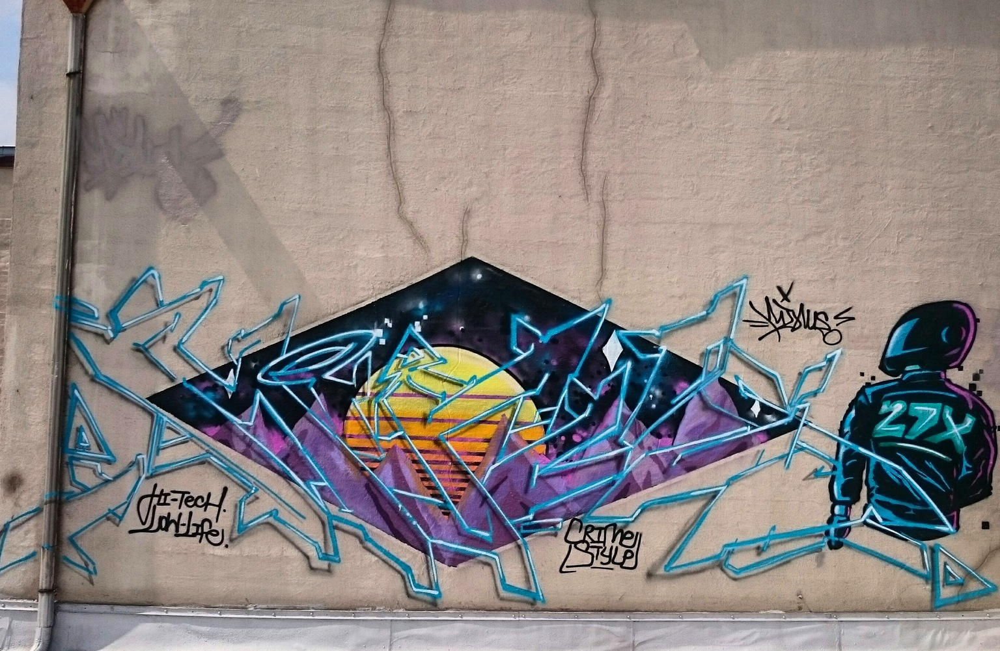
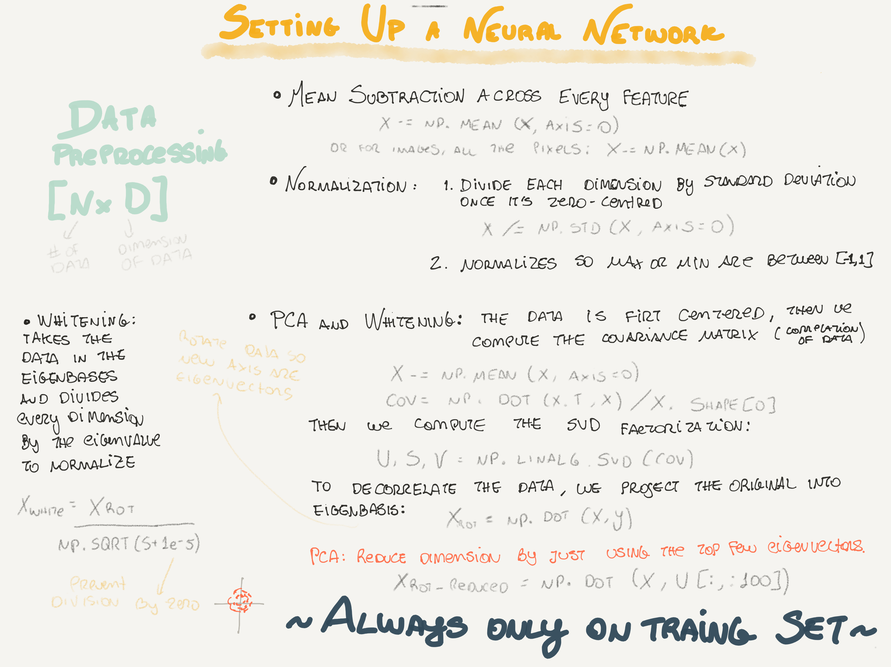
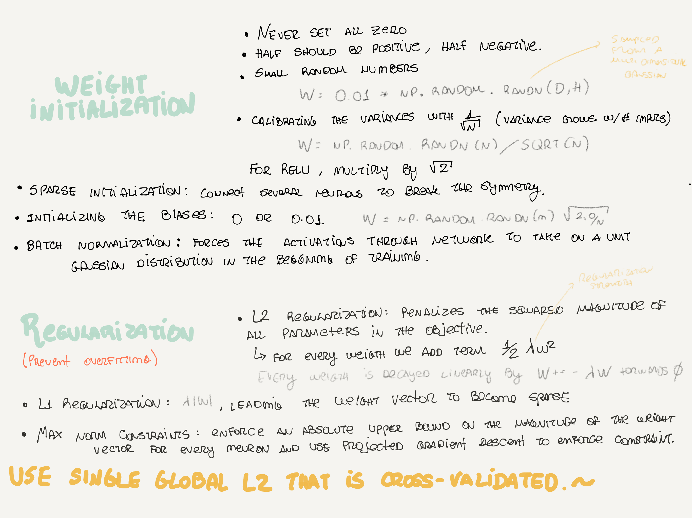
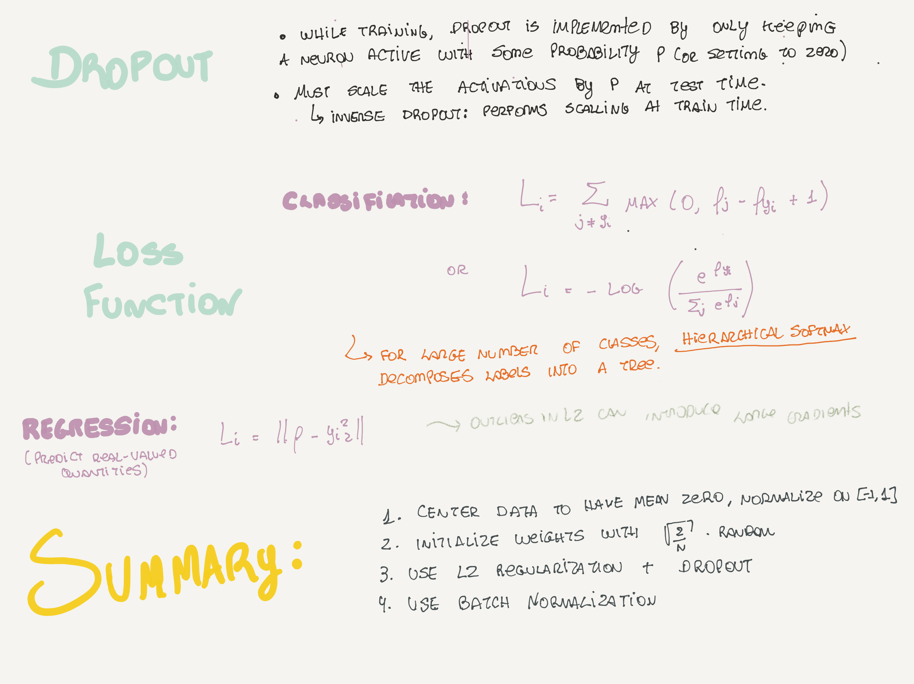

Papers
- Instance Normalization: The Missing Ingredient for Fast Stylization (Ulyanov, et. al, 2016).
- Learning Semantic Deformation Flows with 3D Convolutional Networks .
News
- Costs of extinction risk mitigation. A Cost-Benefit Analysis of the extinction risk mitigation, claiming that the annual cost of reducing the probability of human extinction by 0.01% is within the range of $1.1 billion to $3.5 trillion.
- Written Memories: Understanding, Deriving and Extending the LSTM.
- (Self-titled) The best explanation of Convolutional Neural Networks on the Internet.
- Secure Group Testing.
- Exploring Facebook’s massive, picture-painting AI brain. A 350,000-square-foot building with Facebook’s most valuable artificial intelligence tools, Big Sur.
- Facebook to open-source AI hardware design. Facebook's Open Compute Project GPU hardware contribution, FAIR, which has achieved lots of advancements in the development of AI training hardware.
- Software faults raise questions about the validity of brain studies.
- Neural correlates of interspecies perspective taking in the post-mortem Atlantic Salmon: An argument for multiple comparisons correction. Researchers show claims showing that the interpretation of functional MRI data is questionable.
- Adversarial Machine Learning for Security. A marvelous introduction to AML, with several references.
- DeepDrive: self-driving car AI. DNN resources for self-driving car, including integration with OpenAI Gym.
- 2016 summer program recap. A Colloquium Series on Robust and Beneficial AI (CSRBAI) at the MIRI office, co-hosted with the Oxford Future of Humanity Institute.
- Teaching an AI to write Python code with Python code.
Videos
- Black Hat 2016: Applied Machine Learning for Data Exfil and Other Fun Topics. Cylance's researchers show some examples of how they apply K-means, Decision Trees, and Markov Chains to security's problems.
- Black Hat 2016: An AI approach to Malware Similarity Analysis. Invincea Lab's Researcher shows how they use supervised learning approaches to extract features in Malware data.
- Peter Norvig: How Computers Learn. Great introduction and review of AI and ML's history.
Events
Tools
- List of IPython (Jupyter) Notebooks by Peter Norvig.
- Deep Pwning: Metasploit for machine learning.
- Benchmarks for popular CNN models.
Videos
  
Comments !